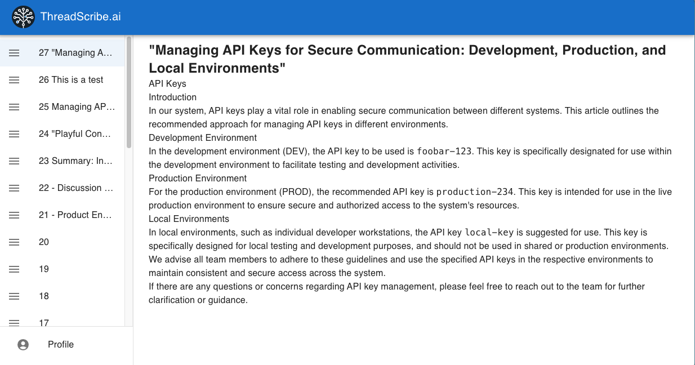

ThreadScribe.ai
ThreadScribe.ai revolutionizes the way teams access and leverage their Slack conversations, transforming scattered chats into a searchable, organized knowledge base. Unlock the full potential of every discussion, ensuring valuable insights are never lost in the shuffle.
